java 航班管理系统的发展历程
项目需求
做一个这样的管理系统
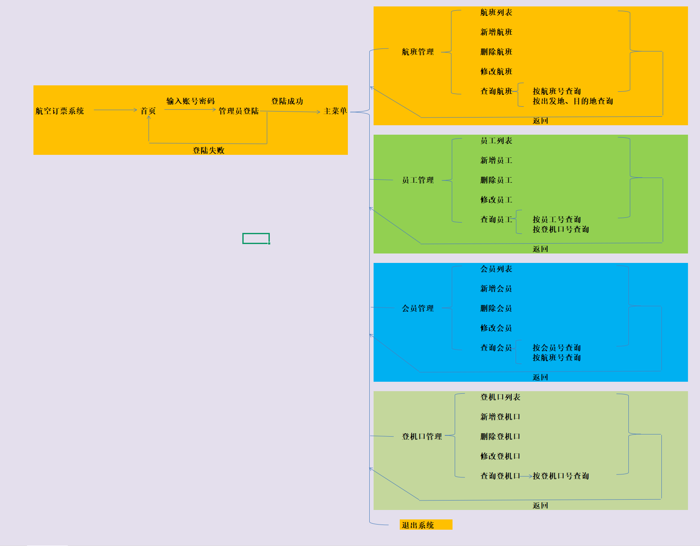
效果要这样
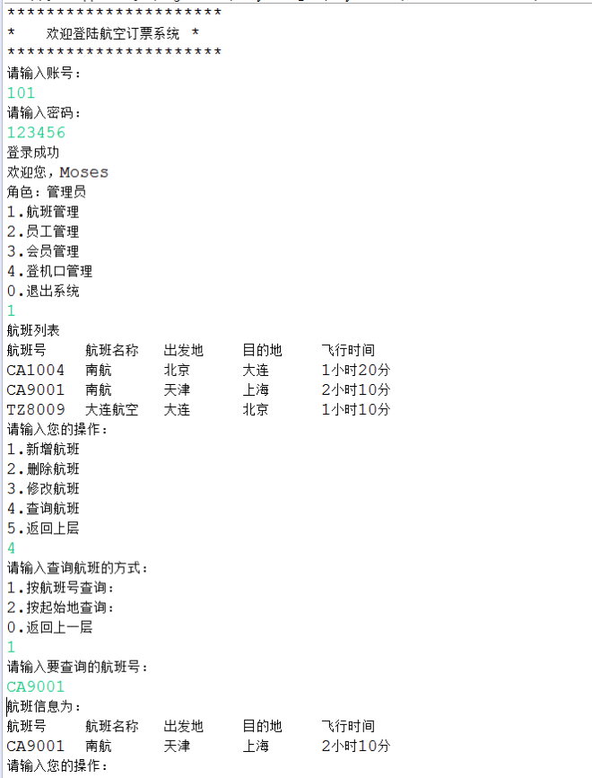
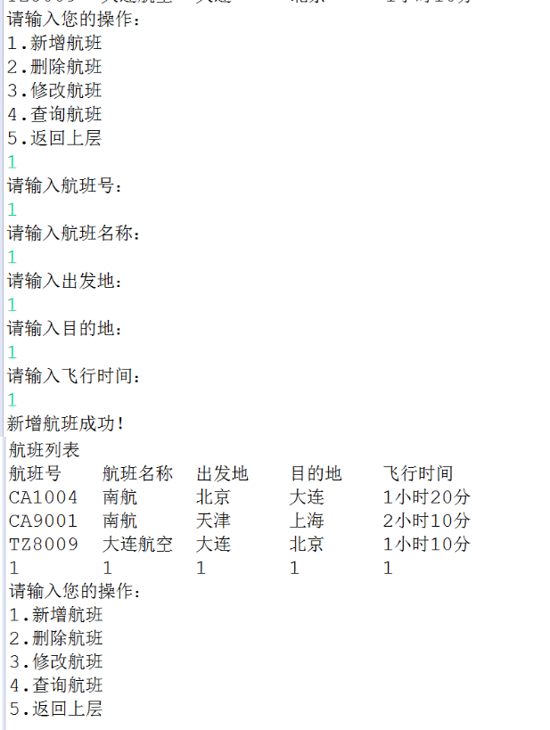
接下来会根据引入的技术和框架，将这个项目划分成各个阶段，我们先看初始阶段
第一阶段：原始阶段
这个阶段为何叫原始阶段呢，因为我们项目的页面展示是在控制台里出现的
完全就是模仿项目需求以及项目效果来做的
居然页面选择这么原始的方式来展示，数据库是不是也准备用 jdbc 呢？我的回答是：NO.
jdbc 完全就是痛苦的回忆 页面基础 数据库就不基础，我直接引入一个MyBatis简化所有数据库操作
此时项目结构甚至还有 mvc 的思想，不过是畸形的 mvc
包结构长这个样子
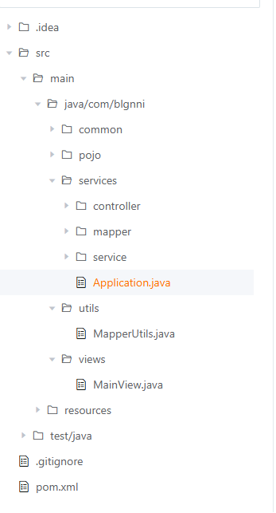
所谓“启动类”
1
2
3
4
5
6
| public class Application {
public static void main(String[] args) throws IOException {
new MainController().starApp();
// log.info("启动应用");
}
}
|
其实到现在我还没有把所有模块开发完，而是只开发了一个员工主线，后面升级框架的时候也是围绕这个模块来升级，主升级，弱开发。
接下来的代码看得我有点恶心，可速看略过
页面输出类：
1
2
3
4
5
6
7
8
9
10
11
12
13
14
15
16
17
18
19
20
21
22
23
24
25
26
27
28
29
30
| @AllArgsConstructor
public class MainView {
public static void showBanner() {
System.out.println("""
*********************
* 欢迎登录航空订票系统 *
*********************
""");
}
public static void showOptions() {
System.out.println("""
1.航班管理
2.员工管理
3.会员管理
4.登机口管理
0.退出系统
""");
}
public static void showEmployeeColumn() {
System.out.println("id\t\t\t" +
"员工号\t\t\t" +
"员工姓名\t\t\t" +
"员工密码\t\t\t" +
"员工性别\t\t\t" +
"员工登机口\t\t\t" +
"员工工资\t\t\t");
}
}
|
员工控制层
1
2
3
4
5
6
7
8
9
10
11
12
13
14
15
16
17
18
19
20
21
22
23
24
25
26
27
28
29
30
31
32
33
34
35
36
37
38
39
40
41
42
43
44
45
| public class EmployeeController {
EmployeeService employeeService;
public EmployeeController() throws IOException {
employeeService = new EmployeeServiceImpl();
}
public Boolean login() {
Boolean isLogin;
try {
isLogin = employeeService.login();
} catch (IOException e) {
throw new RuntimeException(e);
}
return isLogin;
}
public void start() {
//展示数据
employeeService.getAll();
//展示操作选项
curd();
}
public void curd(){
Scanner scanner = new Scanner(System.in);
while (true) {
MainView.showManyOptions(Employee.class);
int currentIndex = scanner.nextInt();
if (currentIndex == 1) {
save();
} else if (currentIndex == 2) {
delete();
} else if (currentIndex == 3) {
update();
} else if (currentIndex == 4) {
get();
} else if (currentIndex == 0) {
System.out.println("0 will break");
break;
} else {
System.out.println("无效输入");
}
}
}
|
员工 service 层
1
2
3
4
5
6
7
8
9
10
| public interface EmployeeService {
Boolean login() throws IOException;
void getAll();
void curd();
void save(Employee employee);
void delete(Integer id);
void update(Employee employee);
void get(Employee employee);
}
|
员工 serviceImpl 类：
1
2
3
4
5
6
7
8
9
10
11
12
13
14
15
16
17
18
19
20
21
22
23
24
25
26
27
28
29
30
31
32
33
34
35
36
37
38
| @AllArgsConstructor
public class EmployeeServiceImpl implements EmployeeService {
EmployeeMapper employeeMapper;
SqlSession session;
Integer currentIndex = -1;
public EmployeeServiceImpl() throws IOException {
session = MapperUtils.getSession();
employeeMapper = MapperUtils.getmapper(EmployeeMapper.class, session);
}
/**
* 登录功能
*
* @return
* @throws IOException
*/
@Override
public Boolean login() throws IOException {
String empNo;
String empPwd;
Scanner scanner = new Scanner(System.in);
System.out.println(Msg.LOGIN_INPUT_USERNAME + ":");
empNo = scanner.next();
System.out.println(Msg.LOGIN_INPUT_PASSWORD + ":");
empPwd = scanner.next();
Employee employee = Employee.builder().empNo(empNo).empPwd(empPwd).build();
Employee isFindEmployee = employeeMapper.getUserLogin(employee);
if (null != isFindEmployee) {
//todo 分辨用户身份 admin vip emp
return true;
} else {
return false;
}
}
|
由此可见原始时代的代码有多么恶心！我已经不忍心继续放代码了
原始时代小结
主要就是用到了MyBatis
可惜是非spring项目的MyBatis 还要自己写个工具类，返回session和mapper，没有自动注入很不方便，于是我决定项目开始向SpringBoot升级
第二阶段：畸形阶段
由一个被Maven管理的传统的java项目，升级成一个SpringBoot项目其实非常好升级
只不过我从来没试过所以踩了很多坑
升级之前将畸形的mvc结构调整了一下
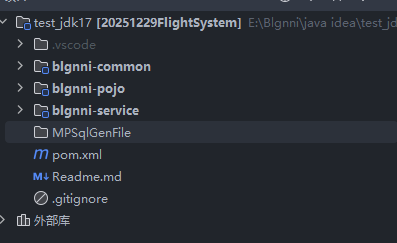
其实是照着苍穹外卖改的
1.如何将java项目升级成SpringBoot项目
将父依赖导入pom文件
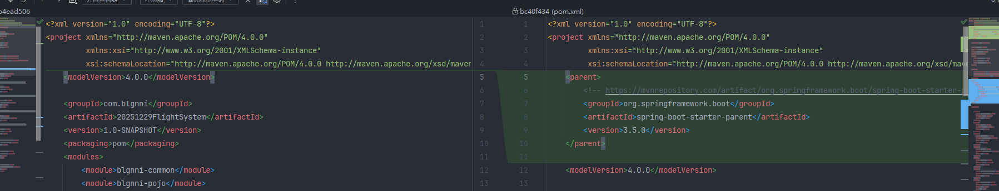
从此指定版本的父依赖就管理了springboot项目所需要的依赖
1
2
3
4
5
| <parent>
<groupId>org.springframework.boot</groupId>
<artifactId>spring-boot-starter-parent</artifactId>
<version>3.5.0</version>
</parent>
|
后续的依赖只需要写成这样就OK了，要啥取啥，版本被父依赖管理了，解决了依赖冲突
1
2
3
4
5
6
7
8
9
10
11
12
13
| <dependency>
<groupId>org.springframework.boot</groupId>
<artifactId>spring-boot-starter-web</artifactId>
</dependency>
<dependency>
<groupId>org.springframework.boot</groupId>
<artifactId>spring-boot-starter-jdbc</artifactId>
</dependency>
<dependency>
<groupId>org.springframework.boot</groupId>
<artifactId>spring-boot-starter</artifactId>
</dependency>
|
你应该会好奇我的这个父依赖从哪里来的，当然是MVN库里面我自己找的了;
第一种引入 mvn库苦苦寻找
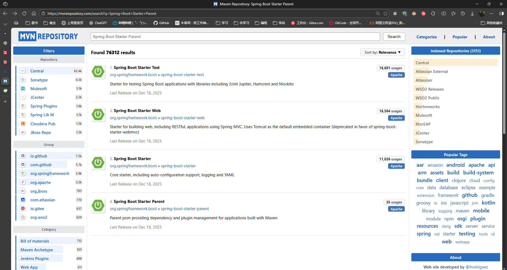
他妈的这个狗东西老子搜Spring Boot Starter Parent 点击Relevance，结果第四个结果才是他，找了好久。
第二种引入 SrpingBoot官方快速搭建spring boot项目
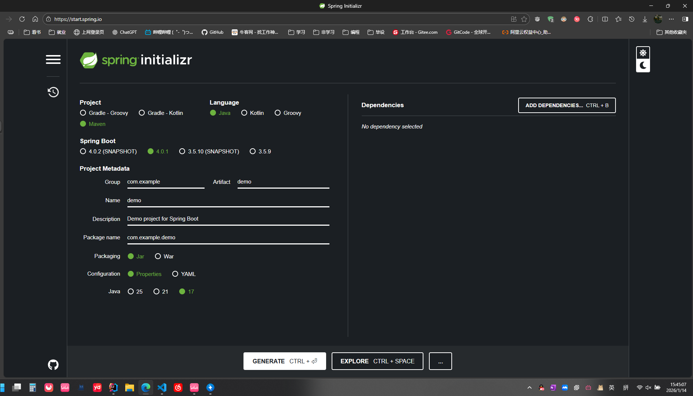
点上面想要的版本，点generate生成一个项目，右上角会下载项目，然后点开压缩包，点开pom文件复制一下。这算不算邪修
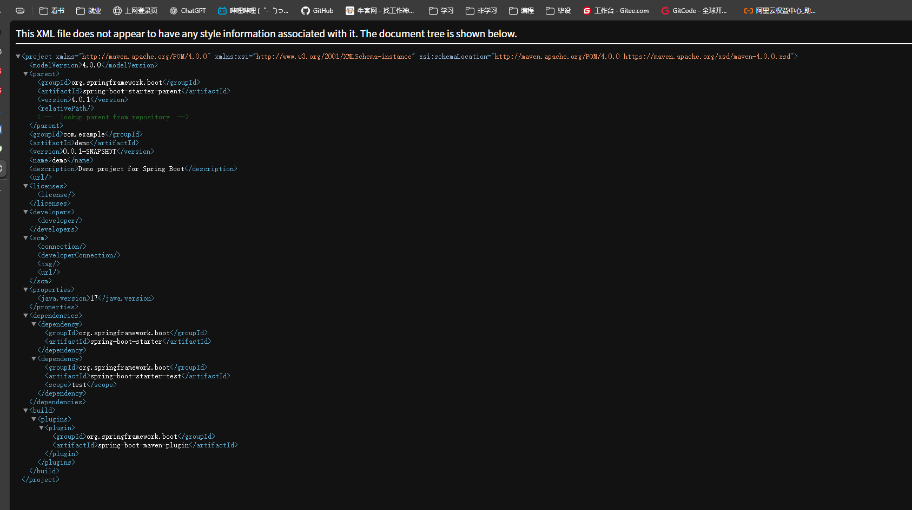
第三种引入 看书
我就是看了这个才升级好的
廖雪峰java教程
理解spring和springboot的关系，看看springboot项目结构。
自作聪明走途径只会越来越麻烦
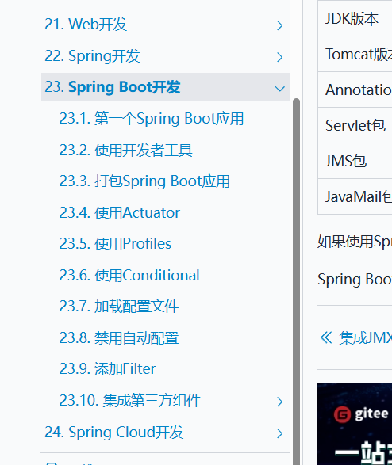
2.Mybatis向MyBatisPlus升级
我一开始只是自行引入了Mybatis，对于MyBatisPlus还没有什么想法。直到隔壁也在做这个项目的同学看到我用Mybatis，也想引入的时候，我看到了MyBatisPlus。
当时这位兄弟正在看这个入门文章
mybatis看这一篇就够了，简单全面一发入魂
由于当时这篇文章对他来说写得比较乱，没看懂写了啥，于是引起了我的好奇。
我在翻阅这篇文章的时候突然一个看见一个令人激动的关键字自动生成那我必须引入了
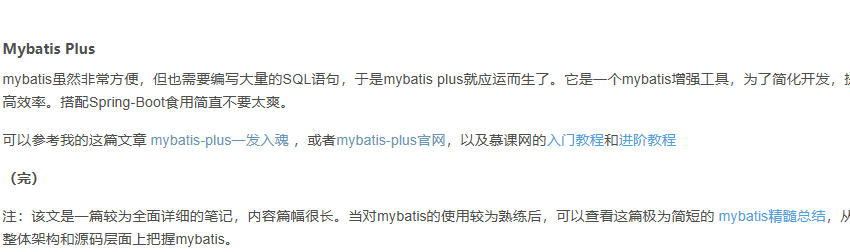
不过这篇文章没看
Mybatis Plus 看这篇就够了，通俗易懂，一发入魂
代码自动生成类
1
2
3
4
5
6
7
8
9
10
11
12
13
14
15
16
17
18
19
20
21
22
23
24
25
26
27
28
29
30
31
| public class CodeGenerator {
public static void main(String[] args) {
FastAutoGenerator.create("jdbc:mysql://localhost:3306/flightsystem", "root", "blgnni")
.globalConfig(builder -> {
builder.author("blgnni") // 设置作者
.outputDir("E://Blgnni//java idea//test_jdk17//MPSqlGenFile"); // 指定输出目录
})
.dataSourceConfig(builder ->
builder.typeConvertHandler((globalConfig, typeRegistry, metaInfo) -> {
int typeCode = metaInfo.getJdbcType().TYPE_CODE;
if (typeCode == Types.SMALLINT) {
// 自定义类型转换
return DbColumnType.INTEGER;
}
return typeRegistry.getColumnType(metaInfo);
})
)
.packageConfig(builder ->
builder.pathInfo(Collections.singletonMap(OutputFile.xml, "E://Blgnni//java idea//test_jdk17//MPSqlGenFile//Mapper")) // 设置mapperXml生成路径
)
.strategyConfig(builder ->
builder.addInclude("fuckkk") // 设置需要生成的表名
.addTablePrefix("t_", "c_") // 设置过滤表前缀
)
.templateEngine(new VelocityTemplateEngine()) // 使用Freemarker引擎模板，默认的是Velocity引擎模板
.execute();
}
}
|
就是因为有这个代码自动生成，搞得我现在都还没写其他模块，只写了员工模块;一路升级
令人惊喜的Mapper包装类
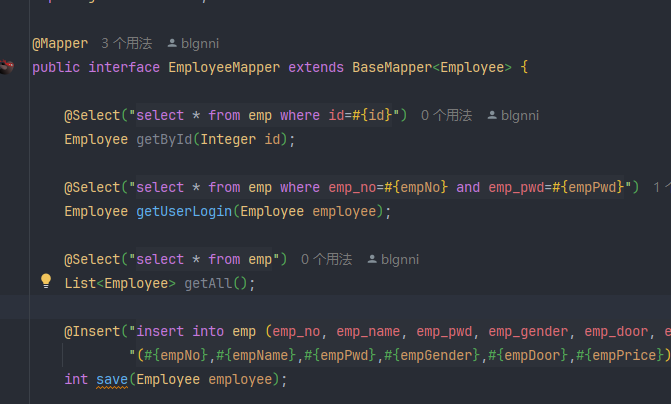
传统的Mybatis还要写写注解，或者在xml里写点查询
这个自动生成的代码直接先继承一个BaseMapper，这里面包装了一大堆基本的查询，普通sql都成方法了
分页插件
这个Mp用的最爽的一次就是写分页的时候。
用一个Wrapper包装起来，然后调方法，.eq就是等于什么，.like 就是模糊查询，后续mybatisplus的自动分页都会把sql拼接起来
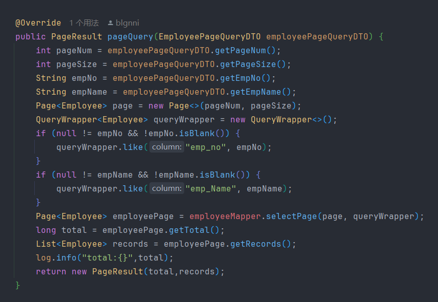
这个也是用MP最不爽的一次：
mp自己说提供了自动分页的插件，结果新版本在自己包里面弃用了，移入了另一个包里
1
2
3
4
5
| <dependency>
<groupId>com.baomidou</groupId>
<artifactId>mybatis-plus-jsqlparser</artifactId>
<version>3.5.12</version>
</dependency>
|
但是官方文档提都不提一嘴，还得哥们自己搜解决方案，额外引一个包
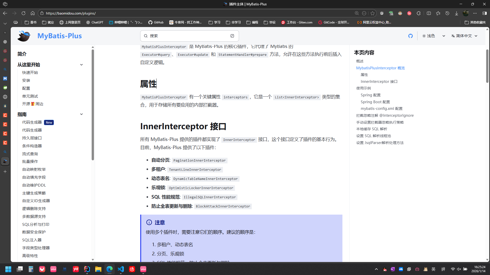
如果不引包，new PaginationInnerInterceptor的时候就提示不存在
1
2
3
4
5
6
7
8
9
10
11
12
| @Configuration
@MapperScan("com.blgnni.mapper")
public class MybatisPlusConfig {
@Bean
public MybatisPlusInterceptor mybatisPlusInterceptor() {
MybatisPlusInterceptor interceptor = new MybatisPlusInterceptor();
// 设置分页插件
interceptor.addInnerInterceptor(new PaginationInnerInterceptor(DbType.MYSQL));
return interceptor;
}
}
|
3.为什么是畸形阶段
项目明明已经调整了畸形的mvc项目结构，升级成了SpringBoot项目，甚至将MyBatis升级成了MyBatis-plus,为什么哥们的项目阶段还是畸形阶段？
因为哥们的控制台页面输出还没改
想要启动这个时期的项目，首先要启动一下启动类；
然后发一个get请求
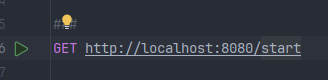
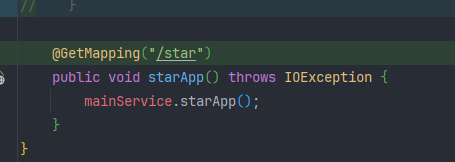
控制台输出了管理系统的界面
此时就又回到了阶段一的原始时代了；😂😂😂😂😂😂😂
畸形时代小结
这次升级为了解决依赖冲突，花费了两天，得到的最终秘诀是看点正经的教程；
mvn库里似乎可以看到依赖关系，就在复制依赖的下面
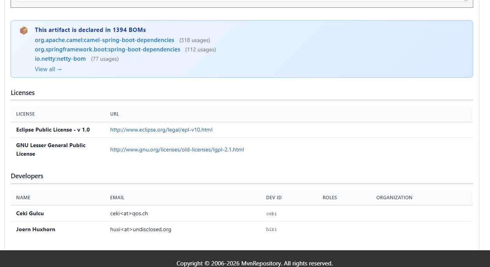
第三阶段：拓荒阶段
为了摆脱页面在控制台输出的困境，我开始引入vue，搭配Element-plus,搭建了一个显示效果不错的前端。
至于为什么叫拓荒阶段，因为哥们前端的js,vue都没正经学过，所以项目的开发搁置了很长一段时间，起码得有三四天；
1.拓荒碰壁路径
我上来就是一个vue，结果学vue的前提是js，于是简单看了看js，之后开始搜寻各种vue的快速入门视频，期间在对比多方视频的时候发现有的老师用js写，有的老师又用ts写vue，正是了解到还有ts这个语言后我开始感到懈怠，他妈的怎么还要学一个语言啊；最终在朋友的建议下选择了边学边用;
除了语言学习，我还面临这编译器的选择，我应该用HBuilderX、还是用VScode、还是再装一个博主同款编译器WebStore?我最终选择了界面好看，免费的vscode；
语言、编译器都有了，结果还又来一个node.js
关于node应该是这样的：
nvm管理node版本，node包含npm，npm用于下载依赖；
依赖又分全局和局部：全局又不是为所有node版本下载依赖，而是对当前使用的node版本下载依赖；局部应该是为项目单独装依赖
整半天终于对前端项目有了点概念
写前端又要用饿了么plus，依旧拓荒
2.ai助力拓荒，哥们收尾调优
我发现写个前端界面不容易，应该让ai帮我写好一个前端，我只负责传数据，发请求
登录页面
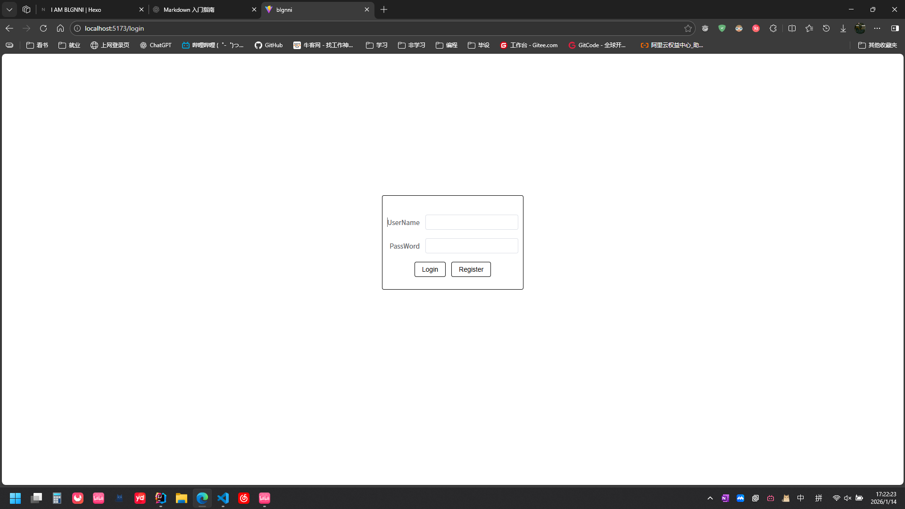
这个是手搓的，我觉得这个很酷
首页页面
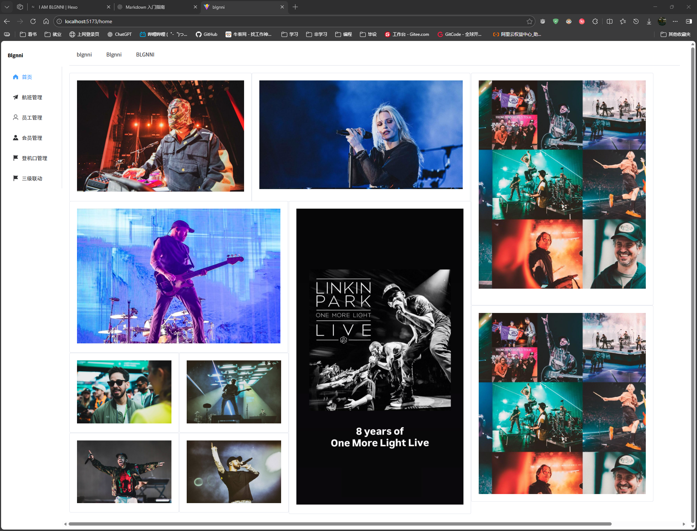
这个也手搓的，我觉得这个也很酷，图片都是林肯公园在网易云音乐动态发的
员工页面
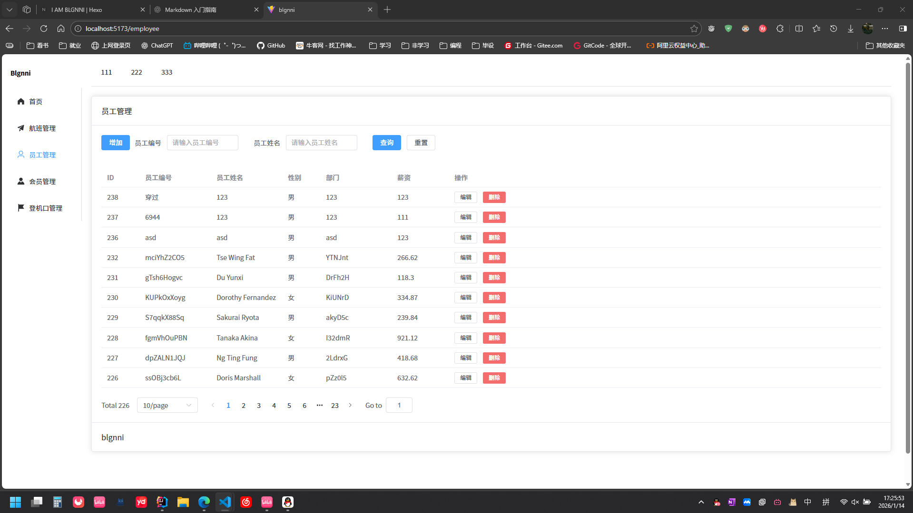
这个表是ai生成的，有工具生成何乐不为，哥们只需要调参就OK了
3.跨域
本想用nginx来个反向代理解决，奈何这个是在项目完成的时候才用的
后来我在后端加个配置类ok了，又想在前端加个代理少写点路径，前端代理后发现又多了个api前缀，又要在后端加个Filter处理一下请求路径；
最难忘:在员工controller类名上错用了注解 @RestController(“这里写的是Bean的命名”)，我写成了请求路径，应该写成@RequestMapping(“/admin/employee”)
4.拓荒时代小结
前端Vue3+Vite搭建项目，TypeScript+Element-Plus搭建页面，axios发送请求；后端编写请求域配置类解决跨域，又编写Filter处理请求前缀，整个后端基本框架是SpringBoot+Mybatis-plus。
从此这个项目走向了大前后端分离时代
第四阶段 前后端分离时代以及次世代
我觉得前端的ai+调参，结合后端的MyBaits-Plus,基本上可以批量生成各个模块了，不过也有可能是我的水平依旧太低，看不到更多需求吧；
总结
治学需严谨，我们必须承认，人是有局限性的，今天学到了技术，不能沾沾自喜，明天还有更多要学习的东西。永远保持一颗学徒的心，不要受外界干扰，找到自己内心的平静.
Find your inner peace…